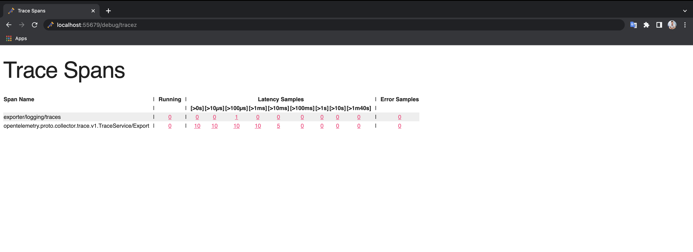

OpenTelemetry tracing
The OpenTelemetry tracing sandbox demonstrates Envoy’s request tracing capabilities using OpenTelemetry as the tracing provider.
In this example, 2 backend services are provided:
service-1service-2
3 Envoy proxies are also provided to route requests to them:
envoy-front-proxy(envoy-front-proxy.yaml)envoy-1(envoy-1.yaml)envoy-2(envoy-2.yaml)
Of these services, only the Envoy front-proxy service is exposed outside of the
composition, on port 10000.
For service-1, requests are routed based on the request path trace/1, as follows:
User -> Envoy(
envoy-front-proxy) -> Envoy(envoy-1) ->service-1
For service-2, requests are routed based on the request path trace/2 as follows:
User -> Envoy(
envoy-front-proxy) -> Envoy(envoy-1) -> Envoy(envoy-2) ->service-2
All Envoy proxies are configured to collect request traces, as can be seen in their configurations, propagating the spans (parent/child/shared context) generated by the OpenTelemetry tracer to a OpenTelemetry cluster.
Each span records the latency of upstream API calls as well as information needed to correlate the span with other related spans (e.g., the trace ID).
The OpenTelemetry collector provides a web UI for viewing the collected traces on port 55679.
Step 1: Build the sandbox
Change to the opentelemetry directory.
To build this sandbox example, and start the example services run the following commands:
$ pwd
examples/opentelemetry
$ docker compose pull
$ docker compose up --build -d
$ docker compose ps
Name Command State Ports
-------------------------------------------------------------------------------------------------------------------------------
opentelemetry_envoy-1_1 /docker-entrypoint.sh /usr ... Up 10000/tcp
opentelemetry_envoy-2_1 /docker-entrypoint.sh /usr ... Up 10000/tcp
opentelemetry_envoy-front-proxy_1 /docker-entrypoint.sh /usr ... Up 0.0.0.0:10000->10000/tcp
opentelemetry_opentelemetry_1 /otelcol --config=/etc/ote ... Up (healthy) 4317/tcp, 55678/tcp, 0.0.0.0:55679->55679/tcp
opentelemetry_service-1_1 python3 /code/service.py Up (healthy)
opentelemetry_service-2_1 python3 /code/service.py Up (healthy)
Step 2: Make a request to service-1
Now send a request to service-1, by calling http://localhost:10000/trace/1.
This will be routed via 2 of the Envoy proxies:
front-proxyenvoy-1
$ curl localhost:10000/trace/1
Hello from behind Envoy (service 1)!
Step 3: Make a request to service-2
Now send a request to service-2, by calling http://localhost:10000/trace/2.
This will be routed via all 3 of the Envoy proxies:
front-proxyenvoy-1envoy-2
$ curl localhost:10000/trace/2
Hello from behind Envoy (service 2)!
Step 4: View the traces in OpenTelemetry UI
Point your browser to http://localhost:55679/debug/tracez.
You should see the OpenTelemetry dashboard.
In the Latency Samples of opentelemetry.proto.collector.trace.v1.TraceService/Export you can explore the traces by clicking any value of
[>0s][>10µs][>100µs][>1ms][>10ms][>100ms][>1s][>10s][>1m40s].
See also
- Request tracing
Learn more about using Envoy’s request tracing.
- OpenTelemetry
OpenTelemetry tracing website.